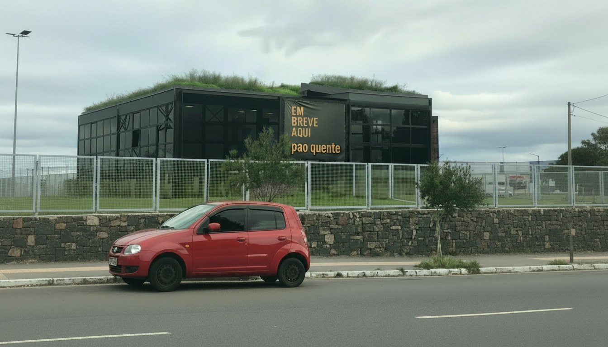
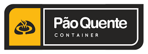

Container
Cardápio completo, ambiente moderno e pratos preparados para quem quer ir além da padaria tradicional.
Experiência da unidade
Uma Pão Quente com personalidade própria.
A Pão Quente Container é um espaço pensado para quem busca variedade, sabor e personalidade em cada refeição. Diferente das unidades tradicionais, aqui o cardápio ganha protagonismo em um ambiente moderno e descontraído.
Hambúrgueres artesanais, massas, pratos, torradas, sopas no pão, risotos e outras combinações compõem uma experiência mais gastronômica, mantendo a qualidade e o cuidado que fazem parte da história da Pão Quente.
Por dentro da unidade
Um pouco da experiência.
Clique em qualquer foto para visualizar em tamanho maior.
Outras unidades